За нас
ECOES JV (Eco Engineering Systems JV) е съвместно предприятие на ECOES Ltd. (UIC 17513699), Лондон, Великобритания, BULFIRE ECOES Ltd. (ЕИК 201474277) и BULFIRE Ltd. (ЕИК 121438234), София, България (ЕС). Трите компании обединяват производствените и търговските си възможности за проектиране, производство и продажба на противопожарна техника, мобилни и стационарни зарядни станции и друга специализирана техника и оборудване.
Основател, главен изпълнителен директор и едноличен собственик на двете компании, участващи в ECOES JV (ECOES Ltd., Лондон, Великобритания, и BULFIRE Ltd., София, България, ЕС), е д-р инж. Атанас Гушев.
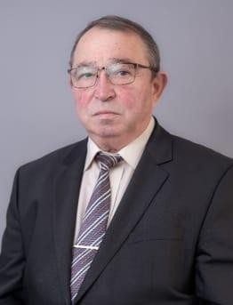
Д-р инж. Атанас Гушев има 45 години опит в автомобилната индустрия, от които 15 години в държавната администрация и 30 години в частния сектор.
Притежава две инженерни магистърски степени и докторска степен:
- магистър инженер по двигатели с вътрешно горене,
- магистър инженер по ремонт и експлоатация на автомобилна и тракторна техника,
- доктор по екологичните аспекти на автомобилните двигатели.
През тези 45 години д-р инж. Атанас Гушев е участвал в създаването и управлението на сложни инженерни проекти, свързани с производството и трансформацията на специализирана мобилна техника.
История
„БУЛФАЙЪР“ ООД е регистрирана през 1997 г. с предмет на дейност проектиране, производство и сервиз на товарни автомобили със специално предназначение – пожарни, аварийно-спасителни, летищни, комунални, селскостопански, подемно-транспортни и други специални превозни средства.

През 2002 г. „БУЛФАЙЪР“ ООД въведе системи за управление на качеството ISO 9001, ISO 14001 и ISO 18001 (OHSAS) за проектиране, производство и сервиз на специализирани товарни автомобили, за които компанията е сертифицирана от SGS London.


През следващите години BULFIRE Ltd. проектира и произведе голям брой автомобили със специално предназначение за България и за износ в други страни. Клиенти на BULFIRE Ltd. са големи и отговорни държавни и частни структури като Министерството на отбраната, Министерството на вътрешните работи, Министерството на транспорта, Министерството на енергетиката, Държавна агенция „Гражданска защита“, всички летища в България, „Лукойл Нефтохим Бургас“, ТЕЦ „Марица Изток“, АЕЦ „Козлодуй“ и много други.
По-долу е представена кратка галерия на някои от автомобилите със специално предназначение, проектирани и произведени от BULFIRE Ltd.


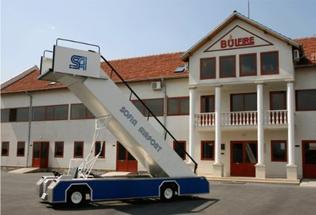

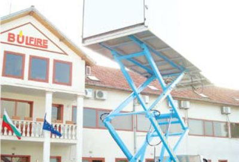
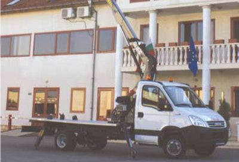
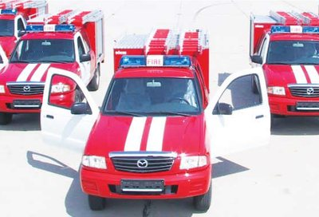


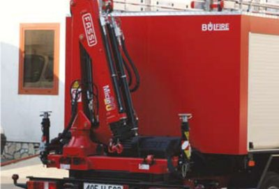
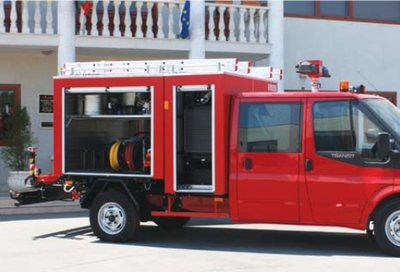


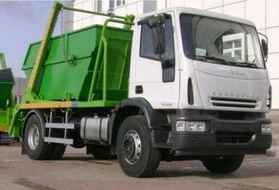
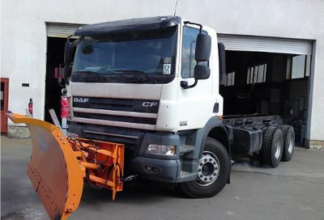
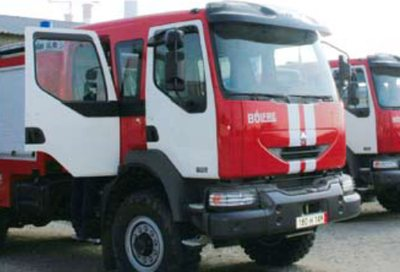
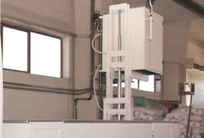

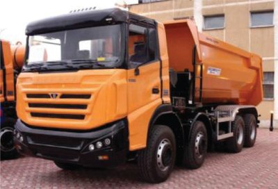


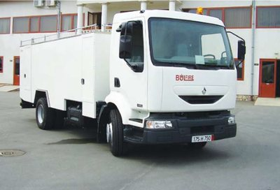


През 2024 г. BULFIRE Ltd. пренасочи производствения си потенциал към производство и износ на високопроходими противопожарни автомобили, трактори и ремаркета, селскостопански и други специални камиони за работа в тежки условия извън пътя. Тази производствена дейност за износ BULFIRE Ltd. възложи на свързаната с нея компания BULFIRE Technics Ltd. BULFIRE Ltd. извършва проектирането, хомологацията, сертифицирането и контрола на производствената дейност на BULFIRE Technics Ltd.
Високопроходимите камиони, трактори и ремаркета, произвеждани от BULFIRE Technics Ltd., са предназначени за търговци на противопожарна техника и за търговски дружества, участващи в обществени поръчки в различни страни. Възможна е и продажба на крайни клиенти, но предпочитаният начин на работа е чрез търговци на противопожарна техника.
Дилъри: Фирми или физически лица, които желаят да бъдат дилъри на BULFIRE Technics Ltd., трябва да имат познания и опит в продажбите в поне една от следните области – противопожарна техника, други специални камиони или селскостопанска техника.

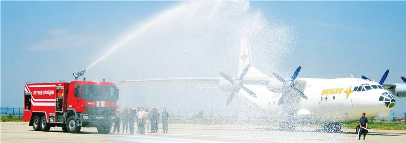